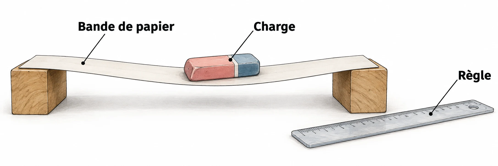

OBSERVER · EXPÉRIMENTER · EXPLIQUER
La forme change la résistance
Garde le même matériau. Fais varier la charge et la forme dans le domaine du modèle.

✎ Garde ta feuille à côté de toi.Sur le site : manipule et observe. Sur ta feuille : relève les résultats et explique tes choix.
Avant de terminer
Vérifie les numéros des questions, les unités et les résultats de tes essais. Compare ensuite avec la correction.